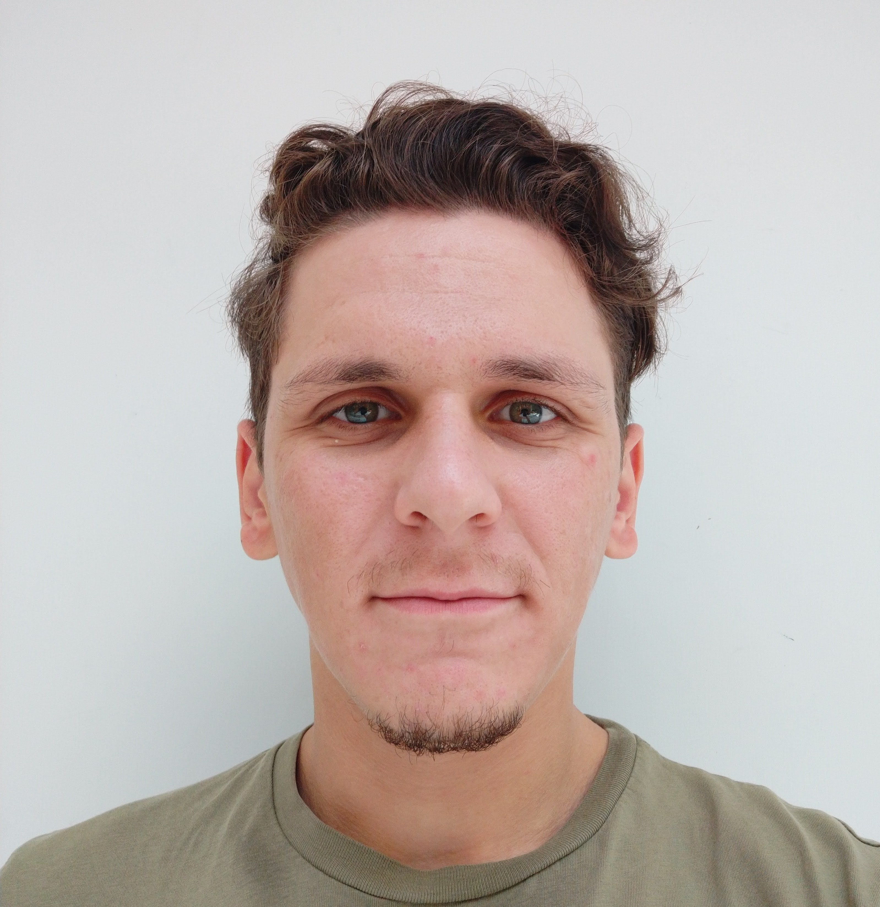

|
Burhan Karahasan I'm a robotics researcher. I got degrees in mechanical engineering & electrical and electronics engineering from Koc University in Istanbul. |
 |
{kind=link}
BiographyBurhan Karahasan is a graduate researcher at Koç University, specializing in medical microrobotics with a focus on optimization-based design, modeling, and control. He holds dual bachelor's degrees in Mechanical and Electrical & Electronics Engineering (2018–2024) from Koç University, graduating Summa Cum Laude with a 3.95 CGPA and ranking third in Mechanical Engineering. He is currently pursuing an MSc in Mechanical Engineering (2024–Present). His research includes developing path optimization algorithms for robotic-guided brain surgeries and working on milli/microrobotic devices for medical applications. He co-authored a published paper on real-time wireless sensor integration for mechanical ventilation systems. Burhan is proficient in MATLAB, Python, C/C++, and engineering software like Siemens NX, SolidWorks, and Ansys. He received a full merit scholarship, completed an AI track program, and earned multiple Vehbi Koç Honor Awards. ResearchI am currently a graduate researcher at Koç University, focusing on medical microrobotics. My work involves optimization-based design, modeling, and control for milli/microrobotic devices aimed at solving real-world healthcare challenges. During my undergraduate studies, I worked on a robotic-guided brain biopsy project, where I developed optimization-based algorithms for trajectory planning using MRI/CT-derived imaging. This research aimed to minimize tissue damage and enhance procedural accuracy by designing patient-specific entry paths. I also applied a Procrustes-based registration method for CT/MRI-to-patient alignment. Earlier, I contributed to a mechanical ventilation system project, co-authoring a paper on wireless sensor integration for closed-loop control systems. My research seeks to enhance precision and reduce the cognitive load on surgeons through advanced algorithms and robotic systems for minimally invasive procedures. |
Publications |

|
A novel real-time wireless sensor integration for enhancing positive pressure system operation in single limb passive vented circuit
Munam Arshad, Eda Guven, Burhan Karahasan, Ismail Lazoglu BSPC, 2023 bibtex A novel real-time wireless pressure and flow sensor control system enhances the performance of a single limb passive vented circuit for non-invasive ventilatory support. |
|
|
Some project draft
Burhan Karahasan, Ismail Lazoglu, Ihsan Solaroglu CARS, 2024 bibtex Some project abstract. |